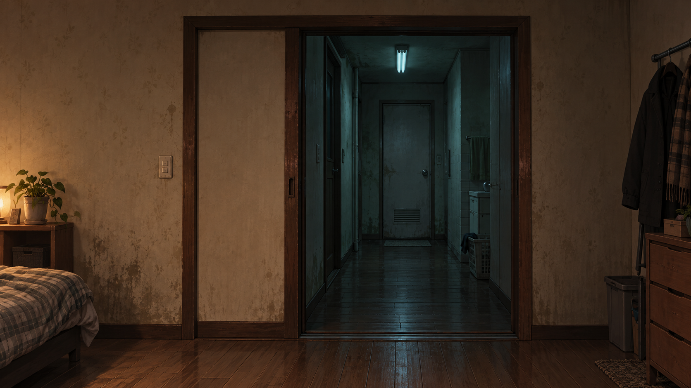

문 너머를 확인하고, 무사히 닫으세요.

02:17
누른 채 ← 열기
문 좀 살살.
아랫집이 예민합니다.
밤에는 문을 조심히 여닫아 주세요.
아래에서 노크하면
멈추고, 조용해질 때까지 기다리세요.
문틈에 손이 보이면
그때는 소리가 나도, 빨리 닫으세요.
잠깐, 숨 고르기.
문밖의 시간도 멈췄습니다.
한 장면의 공포 시안 · 약 1분 · 소리를 꺼도 신호가 표시됩니다. 이전 시안
문 너머를 확인하고, 무사히 닫으세요.

아랫집이 예민합니다.
밤에는 문을 조심히 여닫아 주세요.
아래에서 노크하면
멈추고, 조용해질 때까지 기다리세요.
문틈에 손이 보이면
그때는 소리가 나도, 빨리 닫으세요.
문밖의 시간도 멈췄습니다.
한 장면의 공포 시안 · 약 1분 · 소리를 꺼도 신호가 표시됩니다. 이전 시안